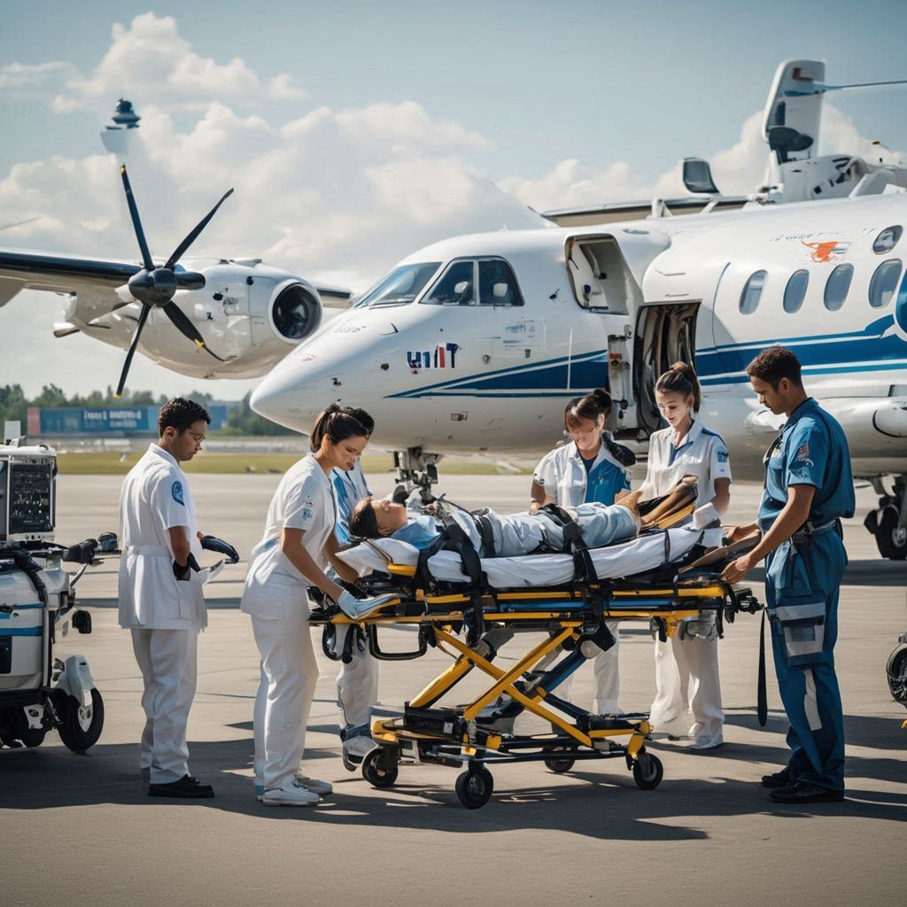
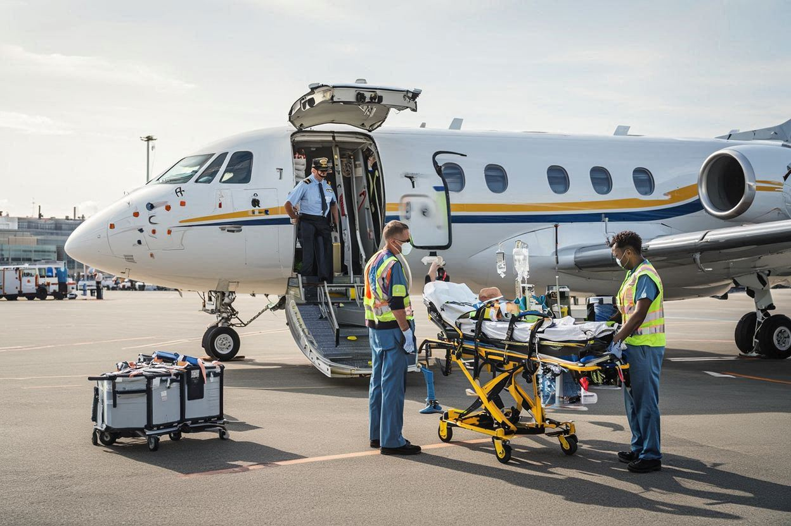
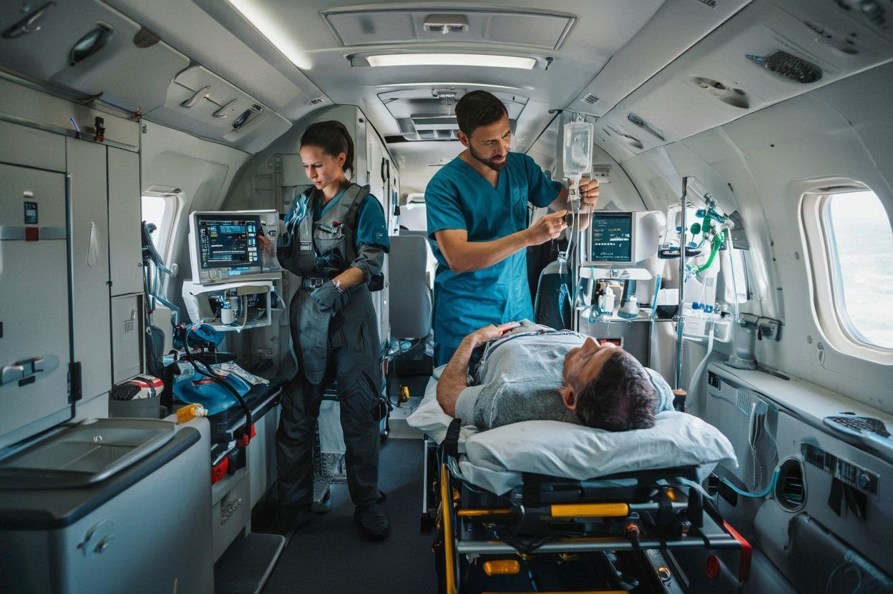

01
🩺
Medical Assessment
Evaluation of patient condition and flight suitability.
Safe cross-border patient transportation with ICU-grade care, medical escorts, and end-to-end global coordination.
Patients may be transported abroad for specialized care, rehabilitation, or safe return to their home country.
These missions require alignment between hospitals, aviation teams, immigration authorities, and medical staff.
International medical transfer involves transporting patients safely across countries for advanced medical treatment, specialized surgery, rehabilitation, or repatriation to their home country. These transfers are often required when treatment options are limited locally or when patients need continued care closer to family support.
Such missions demand careful coordination between hospitals, aviation authorities, immigration departments, and medical teams. Patient stability, medical documentation, flight planning, and regulatory approvals must all align seamlessly for a successful transfer.
SkyRescue specializes in international patient transport using fully equipped air ambulances and medical escort services, ensuring continuous monitoring, in-flight treatment, and smooth hospital handovers across international borders.

Commercial flights are not suitable for critically ill or medically dependent patients who require oxygen support, ventilators, monitoring, or emergency intervention during travel. Air ambulances function as flying intensive care units.
Medical clearances, flight permissions, immigration paperwork, and embassy coordination are managed carefully.
Sending and receiving hospitals are coordinated to ensure safe readiness and smooth clinical handover.
International transfers require coordination across multiple time zones, healthcare systems, and aviation regulations. SkyRescue manages medical clearances, flight permissions, immigration paperwork, and embassy coordination to prevent delays.
Dedicated case managers work closely with sending and receiving hospitals to align medical readiness, ensuring seamless patient handover upon arrival.
Continuous communication between flight crew, doctors, and ground teams ensures the highest level of safety and efficiency throughout the journey.
Every mission is planned carefully to ensure medical safety, regulatory compliance, and seamless international coordination.
Evaluation of patient condition and flight suitability.
Visas, embassy approvals, and aviation permissions arranged.
ICU aircraft and medical team prepared for mission.

Continuous monitoring and treatment during flight.

Direct transfer to receiving hospital team.

International transfers are arranged for a wide range of clinical and logistical needs, depending on patient condition and destination requirements.
Transporting patients back to their home country for continued care.
Accessing specialized surgeries and advanced medical facilities.
Safe international transport for infants and children.
Stable transfer after complex surgical procedures.
SkyRescue brings together international aviation expertise and advanced medical care to deliver safe, reliable, and timely global patient transfers. Our experience across borders ensures smooth execution even in complex cases.
Aircraft configured for extended international missions with advanced onboard medical systems.
ICU doctors and paramedics experienced in handling global patient transfers and critical care during travel.
End-to-end support for visas, embassy coordination, medical papers, and regulatory clearances.
Round-the-clock coordination across time zones to ensure every phase of the mission stays aligned.
Our team manages global patient transport with ICU-ready aircraft, documentation support, medical escorts, and careful hospital-to-hospital coordination across borders.